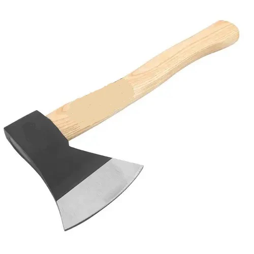
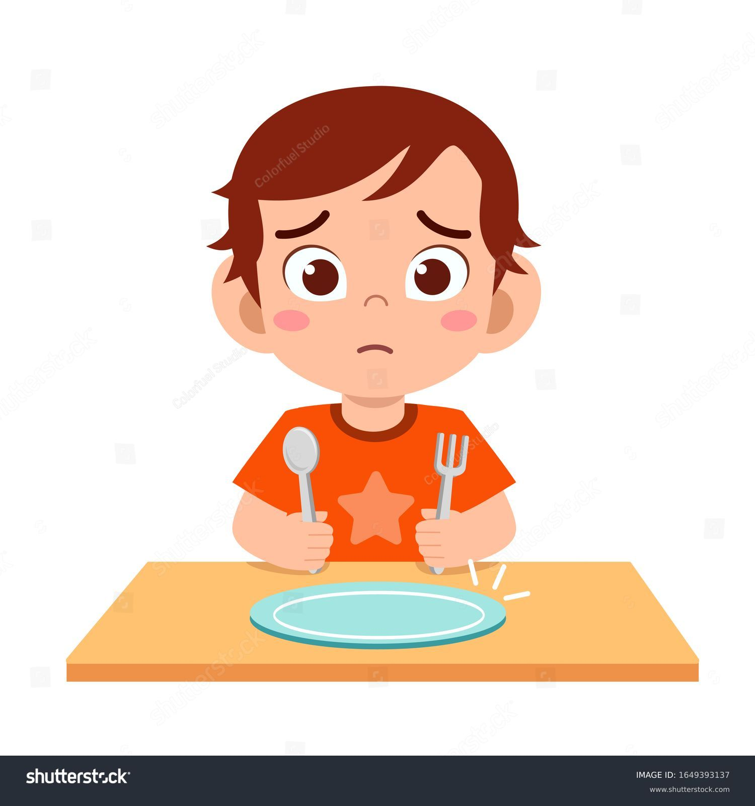
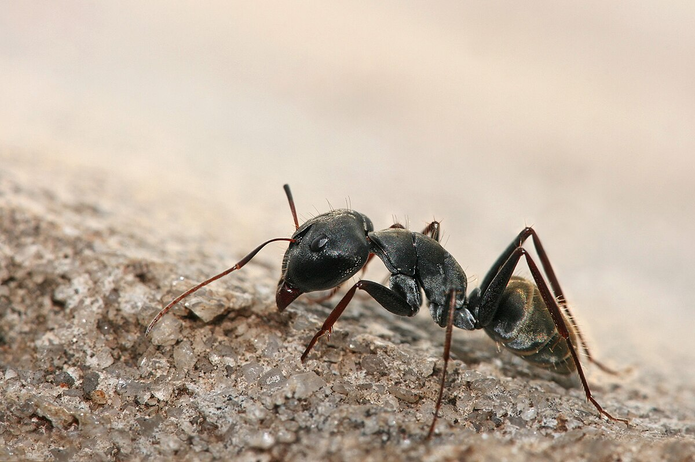

1. Hacha:Herramienta con una hoja afilada y un mango, usada para cortar madera.
2. Hambre:La necesidad o ganas de comer.
3. Hamaca: Una cama o columpio hecho de tela, que se cuelga entre dos puntos.

4. Hormiga: Insecto pequeño que vive en colonias organizadas.
5. Hielo: Agua en estado sólido, por debajo de 0°C de temperatura.